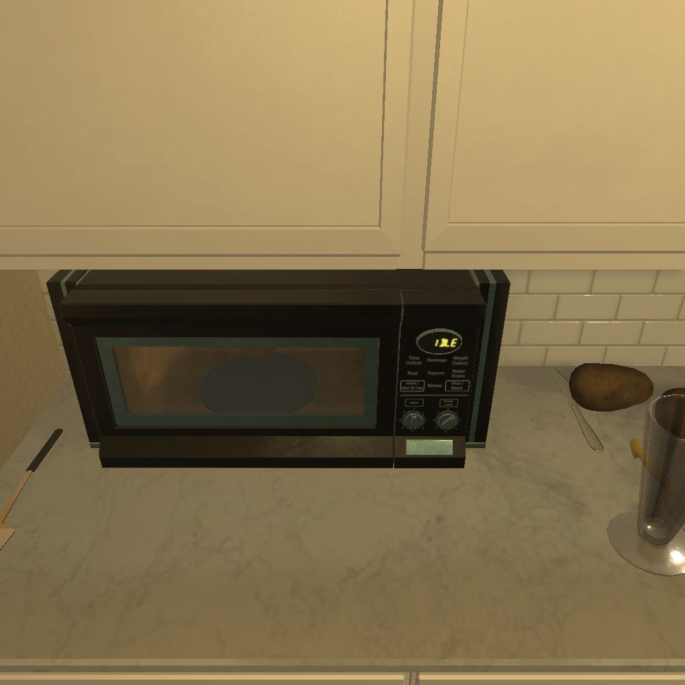
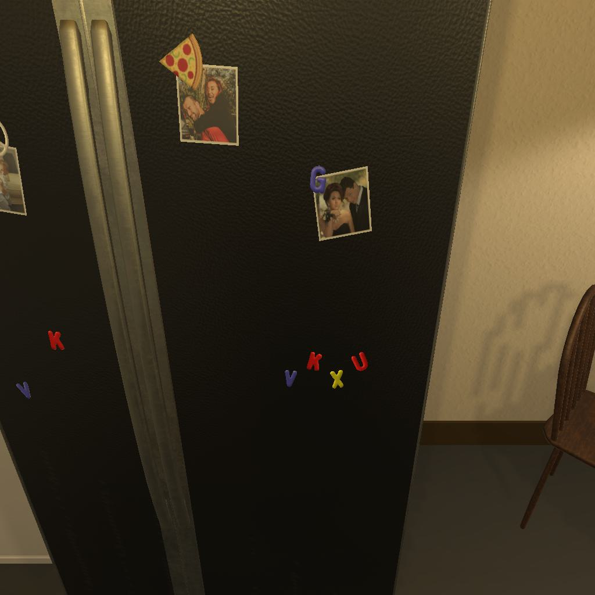

---------------------------------------------------------task: 29---------------------------------------------------------
--------------------------------------------------------------------------------------------------------------------------------------------------------------------
--------------------------------------------------------------------------------------------------------------------------------------------------------------------
Step:--------------------------------------------------------------------------5-------------------------------------------------------------------------------
----------------------------------------
VLM Prompt:
Image1:
Image2:
Image3:
**Instruction**
1. Analyze the provided images to identify all visible household objects and compare the difference between images (e.h. whether the object is opened or not and taken on hand or not), focusing on those relevant to the task description "find two tomato and put them in countertop."
2. Use the analysis of images and the task hint "The agent must find an object of the desired type, pick it up, find the correct location to place it, put it down there, then look for another object of the desired type, pick it up, return to previous location, and put it down there with the other object." to answer the question: what is the most reasonable action in the choices for the task description "find two tomato and put them in countertop"?
3. Decide and write the answer using the template: The answer is: (i): , where i is the real number. If there is no desired object in images, search every place based on **Initial Observation** to find the object. And if no one is exactly correct, choose a similar answer.
**Initial Observation**
You are in the middle of a room. Looking quickly around you, you can see cabinet (1-20), toaster (1), microwave (1), garbagecan (1), countertop (1-2), drawer (1-4), stoveburner (1-4), sinkbasin (1), sink (1), fridge (1), diningtable (1), coffeemachine (1)
**Answer Choices**
(1): go to cabinet 1
(2): go to cabinet 2
(3): go to cabinet 3
(4): go to toaster 1
(5): go to cabinet 4
(6): go to cabinet 5
(7): go to garbagecan 1
(8): go to drawer 1
(9): go to cabinet 6
(10): go to cabinet 7
(11): go to drawer 2
(12): go to stoveburner 1
(13): go to stoveburner 2
(14): go to countertop 2
(15): go to cabinet 8
(16): go to cabinet 9
(17): go to cabinet 10
(18): go to drawer 3
(19): go to drawer 4
(20): go to stoveburner 3
(21): go to stoveburner 4
(22): go to cabinet 11
(23): go to cabinet 12
(24): go to cabinet 13
(25): go to cabinet 14
(26): go to sinkbasin 1
(27): go to sink 1
(28): go to cabinet 15
(29): go to cabinet 16
(30): go to cabinet 17
(31): go to cabinet 18
(32): go to cabinet 19
(33): go to diningtable 1
(34): go to coffeemachine 1
(35): go to cabinet 20
(36): open fridge 1
(37): close fridge 1
(38): examine fridge 1
**Answer**
Let's think step by step by following the instructions.
----------------------------------------
----------------------------------------
Original Response:
The answer is: (36): open fridge 1
Given the task to find two tomatoes and put them on the countertop, we should start by searching in places where tomatoes are likely to be stored. Tomatoes are typically stored in a refrigerator to keep them fresh. The images provided do not show any tomatoes on the visible countertops, inside the microwave, or in the vicinity of the fridge's exterior. Therefore, the most reasonable next action would be to search inside the fridge.
Opening the fridge (fridge 1) would allow us to look inside for the tomatoes. If they are found inside, the agent can then proceed to take them out and place them on the countertop. If the tomatoes are not in the fridge, the next steps would involve searching other typical storage areas, such as cabinets or drawers, where fresh produce might be kept outside the fridge. However, based on the initial observation and common kitchen practices, the fridge is the most likely location for tomatoes. Hence, the selected action is to open fridge 1.
----------------------------------------
----------------------------------------
>>> Refine Original VLM Response and Get Pure Action: open fridge 1
Given the task to find two tomatoes and put them on the countertop, we should start by searching in places where tomatoes are likely to be stored
----------------------------------------
-----------------------------------------------------------------
Running time: 12.239876985549927 seconds
Total Money: 18.33476999999999
-----------------------------------------------------------------
-----------------------------------------------------------------
Text Observation:Nothing happens.
-----------------------------------------------------------------
UNSUCCEED